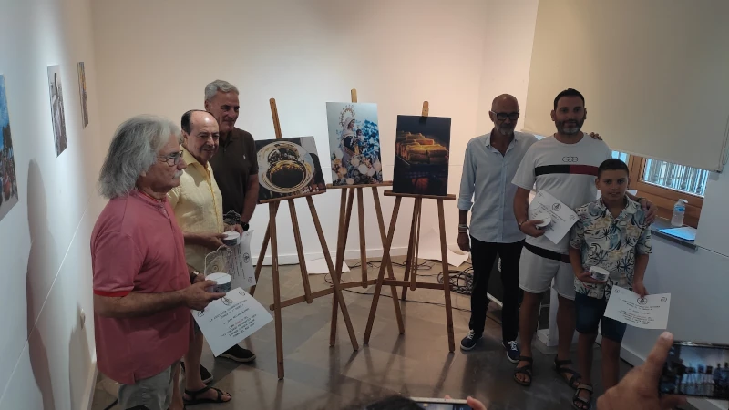

Salida Fotográfica - Peñón del Cuervo (Málaga)
üìÖ Fecha: Viernes, 8 de agosto de 2025
üïò Hora de encuentro: 19:30 h (para aprovechar la luz del atardecer)
üìç Lugar: Pe√±√≥n del Cuervo, Málaga


Descubre las ventajas de formar parte de nuestra asociación fotográfica. Comparte, aprende y crece con nosotros.
Hazte socioüìÖ Fecha: Viernes, 8 de agosto de 2025
üïò Hora de encuentro: 19:30 h (para aprovechar la luz del atardecer)
üìç Lugar: Pe√±√≥n del Cuervo, Málaga
Éstas son las fotografías premiadas y sus autores.
FELICIDADES
Si quieres ver la exposición pásate por la oficina de turismo de Torre del Mar. Estará hasta el 18/08/2025
En la web se está preparando una sección para mostrar las fotografías que han participado.
 Leer másHemos añadido una nueva sección para que nuestros socios puedan compartir sus proyectos personales. Explora la creatividad de nuestra comunidad en Proyectos Personales
Nos estrenamos con un proyecto realizado en la Pandemia por Salvador Calero (socio de Fotoxarco) y Ramón Coloma, que consiste en unas ponencias realizadas en directo con la plataforma Telegram de fotógrafos.